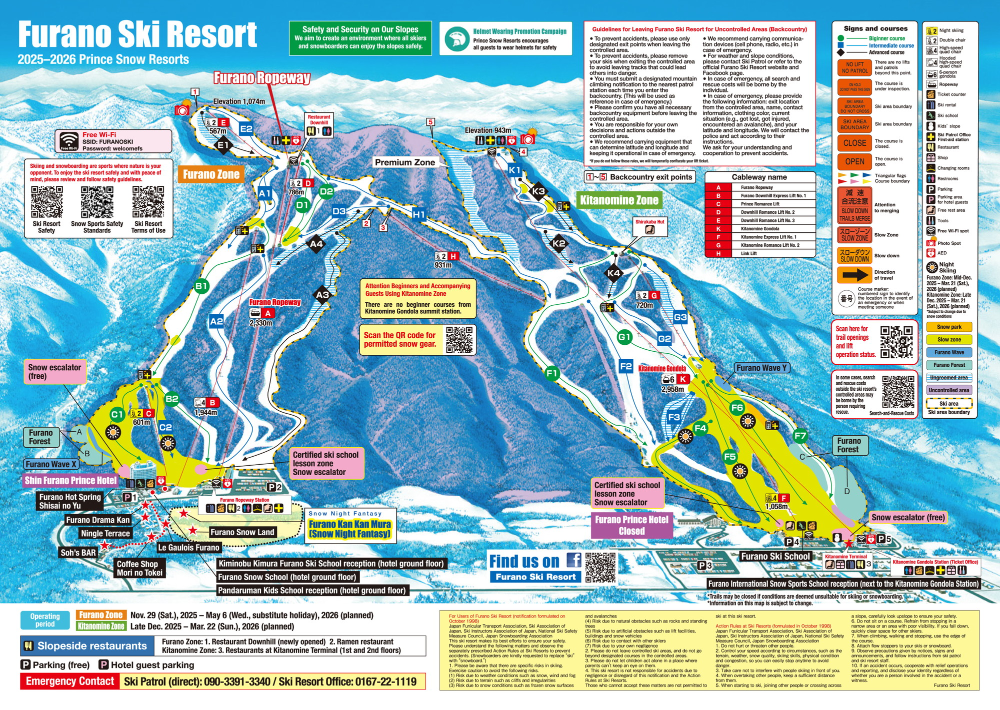

雙指縮放・雙擊放大・上下滑關閉・左右滑看下一張
| 托運額度 | 以長榮電子機票上的額度為準（經濟艙依票種不同） |
|---|---|
| 雪具 | 自備雪板、雪鞋的話，先查長榮的運動用品托運規定，通常可抵 1 件行李 |
| 回程 | 伴手禮很重！行李箱留空間，或帶一個可折疊的備用袋 |

除了已訂的機場巴士，都是 2025–26 季（或更早）的時刻，2026–27 季公布後要再對一次。綠底是行程裡打算搭的班次。
資料來源：Open-Meteo。雪場山頂比山下冷很多（常低 5–10°C）；雪況可看 富良野滑雪場官網 ↗
| 雪場 | 富良野滑雪場，分「富良野區」（新富良野王子旁）和「北之峰區」，一張雪票通用，山上雪道相連 |
|---|---|
| 雪票 | 1 日券 2025–26 季約 ¥8,000；2026–27 季（12/5 – 3/22）價格以 官網 ↗ 為準。12 歲以下免費 |
| 營業時間 | 8:30 – 16:00（或日落） |
| 夜滑 | 富良野區、北之峰區都有（12 月中下旬 – 3/21）：平日 16:00–18:00；週末、國定假日、年末年始 16:00–19:30。2026–27 季官方資料 ↗ |
| 滑雪學校 | FISS（Furano International Snow Sports） +81 80-2951-3216・mail@fiss.jp |
| 天黑 | 1 月約 16:20 日落，下午 3 點後光線變暗、雪面看不清楚 |
| 機場 → 富良野 | ✅ 已訂：1/9 18:10 新千歲機場 23 號乘車處 → 21:05 新富良野王子（バスゴリライナーふらの，2 人 ¥10,000）。確認信印出來給司機看 |
|---|---|
| 飯店 ⇄ 北之峰 | 王子飯店房客專用接駁車（免費），每天約 7 班。完整時刻在「工具」 |
| 飯店 ⇄ 市區 | 薰衣草巴士約 20 分；晚上 Evening Shuttle Bus（¥500）；富良野站回飯店末班 21:03。完整時刻在「工具」 |
| 富良野 → 札幌 | 中央巴士高速ふらの號，富良野站前出發約 2.5 小時、¥2,700（⚠️ 待預訂）。時刻在「工具」 |
| 札幌 → 機場 | JR 快速 Airport 約 37 分鐘，可刷 IC 卡 |
| 信用卡 | 飯店、雪場、超商、大部分餐廳都能刷，帶 2 張 Visa／Master／JCB |
|---|---|
| 現金 | 小餐廳、巴士、市場攤位可能只收現金，每人帶 ¥30,000 左右 |
| IC 卡 | iPhone 錢包可以加 Suica，札幌地鐵、JR、超商都能用 |
| 免稅 | 同店同日購物滿 ¥5,000（未稅）可免稅。2026/11/1 起改新制：先付含稅價，出境時在機場確認後退稅，購物時出示護照 |
| 小費 | 日本不用給小費 |
| 時差 | 日本比台灣快 1 小時 |
|---|---|
| 電壓插座 | 100V，雙平腳插座（和台灣一樣），手機、筆電充電器可以直接用 |
| 網路 | 出發前買日本 eSIM 或網卡 |
| 國碼 | 日本 +81・台灣 +886 打回台灣：+886 ＋ 區碼去 0 ＋ 號碼 |
| 緊急電話 | 警察 110・救護車／消防 119 |
| 飯店 | 新富良野王子 +81 167-22-1111 |
| 氣溫 | 富良野 1 月白天約 −5°C、清晨常到 −15°C 以下；札幌約 −1 至 −7°C |
|---|---|
| 穿著 | 洋蔥式：排汗衣 → 刷毛中層 → 防水外套。室內暖氣很強，進門要能快速脫掉 |
| 走路 | 人行道結冰很滑，穿防滑雪靴或加冰爪，小步走、手不要插口袋 |
| 乾燥 | 室內很乾，護唇膏、乳液、保濕面膜；房間可以掛濕毛巾 |